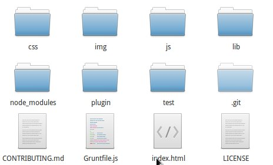
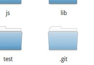
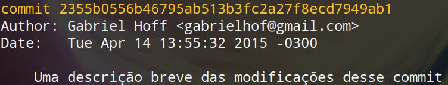
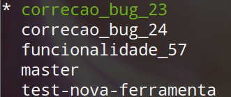

Restaurando o equilíbrio da Força com Git
Ou uma introdução ao controle de versão
Gabriel Hoff
about.me/gabrielhof- Desenvolvedor há 5 anos
- Atualmente no QueFo.me
Como você armazena seu código?
Como você compartilha seu código?


Você controla as alterações no seu código?
Como você reverte suas modificações?
CTRL+Z?
CTRL+Z?
CTRL+Z?

CTRL+Z?
CTRL+Z?
CTRL+Z?

VCS
Version Control System
ou Sistema de Controle de Versão
"é um software com a finalidade de gerenciar diferentes versões no desenvolvimento de um documento qualquer" - Wikipédia
Tá, bacana. Não entendi nada.
O que um diabos um VCS deveria fazer?
- Controlar histórico
- Possibilitar/facilitar o trabalho em equipe
- Marcar "versões"
- Ramificar
Inserir imagem legal exemplificando o VCS
Existem dois tipos de VCS:
Centralizado x Distribuído
Centralizado
INSERIR IMAGEM BACANA EXPLICANDO CENTRALIZACAO


Distribuído
INSERIR IMAGEM BACANA EXPLICANDO DISTRIBUIDO

e...

Projeto Open Source (GPL v2)
Criado por Linus Torvals para manter o Kernel do Linux
História do Git
| 1991 | Kernel do Linux é mantido através de arquivos compactados (tar.gz) |
| 2002 | O Kernel começa a ser mantido por um VCS distribuído e proprietário chamado BitKeeper |
| 2005 | Conflitos entre a comunidade Linux e a empresa dona do BitKeeper ropem a parceria entre os dois |
| 2005 | Nasce o Git |
Por que o nome Git?
(Segundo Linus Torvals)
"Eu sou um egoísta degenerado, batizo todos os meus projetos com meu nome. Primeiro Linux, agora Git."
"Palavra aleatória de três letras que não era usada por nenhum comando UNIX."
"Global information tracker" quando você está de bom humor e tudo funciona.
"Goddamn idiotic truckload of sh*t" quando nada funciona.
Seus objetivos
- Ser rápido
- Ser rápido
- Ser rápido
- Simplicidade
- Robustez
- Ramificação (desenvolvimento não linear)
- Distribuído
- Eficiência em projetos grandes (como o Kernel do Linux)
Instalação
| Linux | apt-get install git |
| Windows | msysgit.github.io |
| Mac OS | git-scm.com/download/mac |
Comandos
Live coding
Ou algo do tipo

Conceitos
Repositório
Local onde podemos guardar algo
No Git, o repositório nada mais é que um diretório que contém um sub-diretório .git

Repositório
O histórico dos arquivos é armazenado dentro do diretório .git
Stage/Index
- No Git, um arquivo pode ter três estados: Comitado, modificado e "staged" (preparado)
- Um arquivo "staged" é um arquivo que tem sua versão atual armazenada em uma área do Git.
- Arquivos na área de "Stage" são candidatos para serem armazenados no repositório.
Stage/Index

Commit
- Um commit é um objeto que aponta para as modificações realizadas nos arquivos do repositório.
- Todo commit é identificado por um hash, possuí uma descrição e informações adicionais (como data e autor).
- Todo commit possuí uma referência para commit anteior.

Commit
Branching ou ramificação
- Um branch é apenas um objeto que aponta para um commit.
- Como todo commit possuí uma referência para o commit anterior, um branch acaba sendo uma referência para todo um fluxo de evolução do repositório.
Branching ou ramificação
- Um repositório Git sempre está "focado" em um branch.
- Quando você faz um commit, o branch atual passa a apontar para esse novo commit.
Branching ou ramificação
- O branch padrão de um repositório Git é o master
- Você pode criar branches para corrigir problemas, adicionar novos arquivos, testar, etc...

Tags
- Uma tag também é um objeto que aponta para um commit, assim como um branch, porém ela é imutável.
- Tags normalmente são usadas para apontar para commits importantes, como uma nova versão.
Hospedagem de repositórios


- Hospedagem de repositórios Git públicos (gratuitos) e privados (pagos)
- Rede Social com 9 milhões de usuário
- Muito utilizada para projetos Open Source


- Hospedagem de repositórios Git públicos e privados
- Repositórios privados e gratuitos com no máximo 5 pessoas
- Projeto Open Source
- Necessário instalar em um servidor
Curtiu e quer aprender mais?
- Guia Prático e sem complicação de Git por Roger Dudler
- Pro Git por Scott Chacon e Ben Straub
- try.github.io
Perguntas?

Obrigado!
Quer dar sua opinião sobre a palestra?
 @gabriel_hof
@gabriel_hof